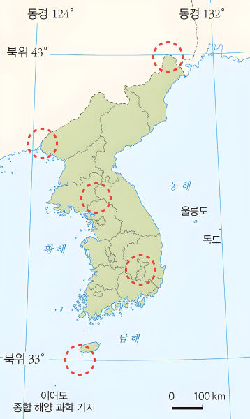

1번
다음은 ‘소중한 대한민국의 영토 끝을 찾아 가다’라는 주제의 영상 촬영 계획의 일부입니다. (가)에 해당하는 지역을 지도의 (A)~(E) 중에서 알맞게 고르세요.
#1 (5월 00일)
촬영지역 :
(가)
촬영내용
- 서울로부터 직선거리 약 650km 떨어진 곳이라는 자막
- 강을 사이에 두고 중국 국기와북한 국기가 펄럭이는 모습
참고
- 다음날은 차량으로 인근의 러시아 국경으로 이동 예정
A
B
C
D
E
